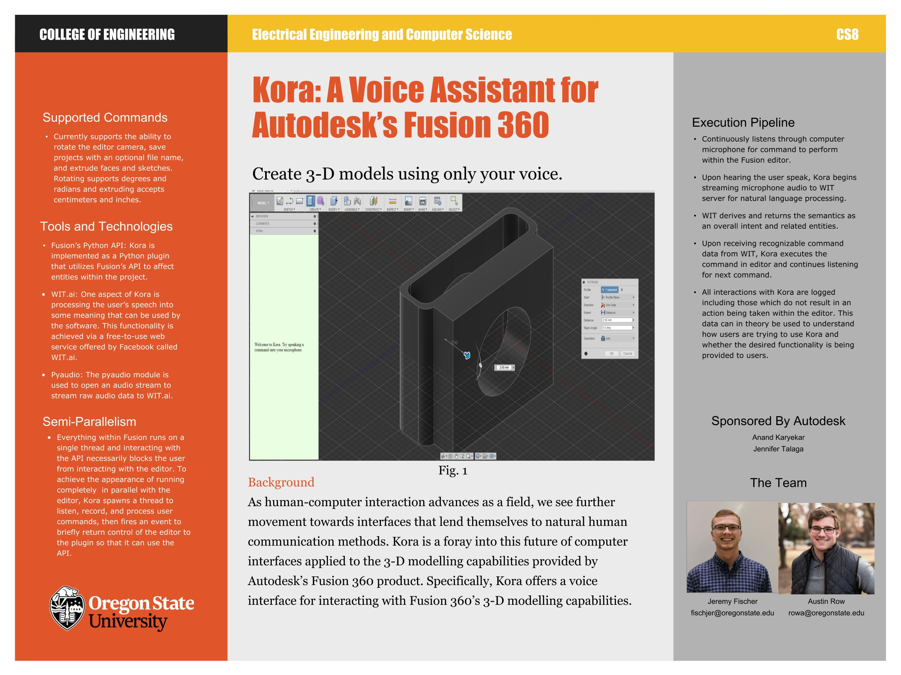
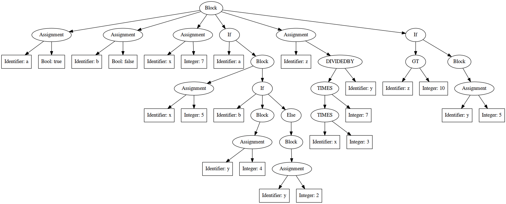
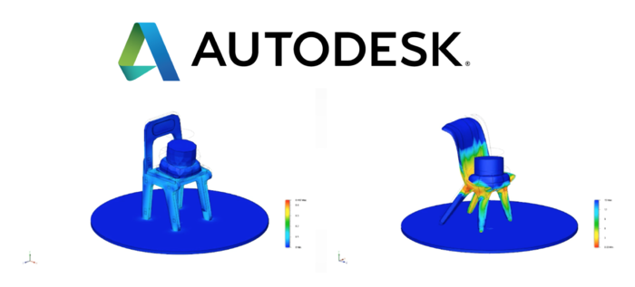

I’m from a small farming community where I spent my summers
working on our family fruit orchard. There's a joke that goes
like this, “Do you know how to make a small fortune farming?
Start out with a large fortune!” That’s because being
a farmer is hard work and depending on the year it doesn’t
always pay off. On a farm you are always trying to find the most efficient use of
resources and figuring out how to fix broken equipment. I believe
this is where my ingenuity and strong work ethic came from.
I spent my winters at the ski resort 30 minutes from my
home working as a ski and snowboard instructor. People from across the globe
come to Mt. Hood to work or to recreate, so I interacted
with people having all different personalities,
temperaments and cultural backgrounds.
I graduate from Oregon State University in December 2018 and
I'm currently looking for full time software engineering opportunities.
Education
Oregon State University
Undergraduate
Major
Computer Science
GPA
3.80
Expected Graduation
December 2018
Elective Coursework
Cloud Development
Translators
Intro To AI
Parallel Programming
Environmental Economics And Policy
Public Speaking
Soil Science
My Experience
Take a look at my work experience.
Oregon State University
September 2015 - June 2016 Corvallis, OR
In my sophomore year of college I was a
teaching assistant for the computer sciences introductory courses.
As a member of the Cloud Platform, Manufacturing and Factory Services team,
I implemented a content recommendation engine for Autodesk's Community Service
The purpose of this RESTful API is to serve as the back-end for a Smart
Farm system. The server is a Docker containerized Node.js and Express app,
that utilizes JSON Web Tokens (JWT) to authenticate users, and MongoDB
as its data store. The system as a whole has three types of sensors:
temperature, irrigation, and soil. A varying number of these sensors
are placed in each block on a fruit farm. The sensors send data to
the server to be stored. As of now, irrigation sensors send the time
irrigation was started and the time the water was stopped. Soil sensors
send the volumetric water content, electrical conductivity, and the soil
temperature. Temperature sensors send the temperature of the air. Users
must signup and login. There are three types of users: Admins, general
users, and sensors; each of which have different privileges within the API.
Users can retrieve important statistics about their farm,
such as the average irrigation time over the past month, the current
soil and temperature data, average soil and temperature data over the
past month, and more!
Kora Voice Assistant
Voice assistant for Autodesk's Fusion 360
3-D modeling software

Technologies:PythonWIT.aiMongoDBPyAudio
Kora is a proof of concept project that integrates a
natural language processing library into Autodesk's 3-D
computer aided design software, Fusion 360. Kora is a
speech-based virtual assistant for Fusion that lets
users perform a subset of tasks within the product
such as saving a document by verbally instructing it
to perform the task. Kora offers users a tool that
decreases the time required to achieve their goals
within Fusion by offering an interface that runs in
parallel with and complements the keyboard and mouse.
Since the inception of publicly available computers
until around 2006 society has interacted with computers
in the same manner – keyboard and mouse. Recently there’s
been a moving trend toward making computers and
machines more interactive. Nintendo launched the Wii
in 2006 and Microsoft’s XBOX division followed in 2010
with the Kinect. Apple launched Siri in 2010 and Microsoft
and Google followed shortly after with their smart assistants.
Autodesk realizes the competitive advantage of having their
products more interactive. This is what lead to Kora.
Autodesk has the opportunity to gain much more from
making their products more interactive than simply
retaining and attracting users due to the new ease of use.
From a data perspective, enabling natural language
processing allows for a new addition to user data that
is rich in potential! Instead of only collecting button
clicks on dropdown menus and ribbon items, with a voice
interface Autodesk would be able to collect exactly what
the user is intending to do. This form of data collection
rips away the ambiguity of the data.
Kora was created by Austin Row and myself for our senior project.
Python To C++ Translator
Translates a subset of Python into C++

Technologies:PythonFlexBisonC++GraphViz
This project translates a small subset of the Python
programming language into the C++ programming language.
This translator consists of two major components:
Scanner
The scanner is in charge of reading the input characters
and creating a queue of tokens based off of them. A token
is a label for the read input character(s). For instance,
if 2018 was read, then the token INTEGER would be added
to the queue. To create the scanner I used a tool called
Flex. Flex is a tool that's widely-used for generating
scanners. To implement a scanner using Flex, you must
specify a set of regular expressions corresponding to
patterns in your source language along with a set of
actions to take when each of the patterns is matched.
For example, the regular expression −?[0-9]+ will match
any positive or negative integer. So, when a stream of
input characters matches that regular expression (pattern)
the token INTEGER is added to the queue. After running
the Flex scanner on the input my translator has a queue
of tokens that serves as input into the translators next
stage, the parser.
Push-Parser
The parser is in charge of consuming the tokens generated by the
scanner and performing an action based of the sequence of tokens.
For this I used a tool called Bison which easily integrates with Flex.
I created a Push-Parser, so that each time a token is generated in
the scanner, it is pushed to the parser for handling. I created a
Grammar that Bison uses to act on the tokens. Essentially, a
Grammar outlines what a certain sequence of tokens mean. So, if
we also have a PLUS token that represents a + sign, then the
Grammar may specify the following: INTEGER PLUS INTEGER, which
tells the Grammar if it gets an INTEGER token followed by
PLUS token followed by another INTEGER token,
then perform some specified action.
In terms of my Python to C++ translator, my scanner consumes
Python code, generates tokens using regular expressions, pushes
the tokens to the Push-Parser, which then outputs the equivalent
C++ code.
Sentiment Analyzer
A program that determines whether a sentence is positive or negative
Technologies:Python
This project was my first look into Artificial Intelligence.
This program analyses sentences and determines whether they
have positive or negative sentiment. This was done by creating
a Naive Bayes classifier. The data that served as training input
was scraped and cleaned Yelp reviews. Once the program was trained,
users can type in a sentence and the program will say if the
sentence is positive or negative.
Linux Kernel's SLOB Best Fit
Turned the SLOB's first-fit
algorithm to a best-fit
algorithm
Technologies:C++
This project is based off of the Linux Yocto Project.
The Yocto Project is a Linux Foundation project whose goal is
to make Linux distributions for embedded software independent
of the underlying architecture of the embedded hardware. I changed
the SLOB’s first-fit algorithm to a best-fit algorithm.
SLOB stands for Simple List of Blocks and is one of the
three memory allocators for the Linux kernel (if you don’t
know what a kernel is, think of it as the operating system).
The SLOB is designed for embedded software systems, and it
is the default memory allocator in the Yocto Project. SLOB’s
greatest weakness is its high memory fragmentation. This is
because SLOB uses the first-fit algorithm for allocating memory.
The first-fit algorithm allocates the first location of memory
that is sufficient size for the needed memory, and doesn’t care
about memory efficiency. If we were playing Tetris, the
first-fit algorithm would just drop the tiles straight down,
and when the tiles stacked to the top it would shift to an
adjacent column and continue dropping tiles until that column
is full. Where, the best-fit algorithm would play Tetris the
way you’re supposed to. That is, placing the tiles (allocating
memory) in the most space efficient manner.
My findings were, well, what one would expect. The memory fragmentation
decreased drastically, however, the time it took to allocate memory
went up because the SLOB was now finding the best placement for the
memory instead of just grabbing the first available opening.
Leadership Academy
The Leadership Academy helps develop
engineer's Leadership and interpersonal skills
New grads may be technically sound, but when it comes to
leadership and people skills many are falling short. The
Engineering Leadership Academy was developed by Scott Paja
and Industry partners to address that problem. The program
holds workshops for academy members hosted by successful
industry leaders who share their perspective on leadership
development, communication skills, work ethic, and ultimately
what it takes to be an effective leader.
I encourage you to learn more about the Leadership academy
by exploring their site.
Leadership Academy
Teaching Assistant
Helped students succeed
in their introductory computer science classes
Technologies:C++Python
As a teaching assistant I taught labs and hosted recitations
where I helped students understand fundamental programming
concepts. Twice a week I held office hours where I helped students
with questions regarding concepts covered in class, errors in their code, and
design choices. I regularly met with the professor and other TAs
to collaboratively discuss improvements to the curriculum and
what could be done to better the students' learning.
Project Prospector
Using archived designs similar in shape to
automatically run simulations behind the scenes

Technologies:Python
At Autodesk, I worked in the Strategy and Research department under Patti Vrobel,
Distinguished Research Engineer. We tackled a thin vertical into the idea of
the computer as a collaborator as it applies to simulation.
In the mechanical realm before designs can be manufactured and
turned into products, they must first be simulated to assure
the design meets the product's requirements. However,
unless they are familiar with
that product’s mechanics, they don’t know how to correctly
set up the constraints and loads. Even if they get the
constraints and loads set correctly most won’t know how
to interpret the results. Because of this, many times
minor designs are shipped off to the simulation analyst
to be professionally tested. The simulation analyst will
run the simulation, interpret the results, and then send
the design back to the designer with critiques. Involving
a simulation analyst often creates a bottleneck in process
design. Not to mention, for minor designs this is a waste
of company resources as the simulation analyst should be
applying their knowledge to more complex designs.
In collaboration with Patti Vrobel and my team at Autodesk,
I designed and implemented a working prototype, Project Prospector,
that runs in Autodesk’s Fusion 360 and attempts to solve this
problem. Prospector automatically sets up and runs simulation
in the background while the user is designing.
Here's a high level overview of how Prospector works. The user is
designing in Fusion 360. Behind the scenes Prospector scans
their design, queries Design Graph (Autodesk's similarity tool)
for similar parts and downloads
them. Prospector then scans those files for past simulation studies
and uses that info to automatically setup and run the simulation on
the current design in the background. Imagine a chair being designed
in Fusion 360. Prospector takes a snapshot of the design, ships it off
to Design Graph which returns similar looking chairs. Those similar
chairs are then mined for past simulation studies. Let’s say that
Prospector came back and found that ChairSim1 was the best choice
for the user's design. Then Prospector would prepare the user’s chair
design for simulation using the info from ChairSim1. Once the simulation
is done it is then shown to the designer. All of this is done behind the
scene without user interaction.
In the future, if we could filter the simulation’s contours
to something that is easier for the designer to understand, we could
increase a company’s productivity tremendously by cutting off the
simulation analyst bottleneck. By shortening the time to manufacture,
products get to market faster, increasing company revenues. Prospector
allows the designer to design, the simulation analyst to simulate complex
designs, and the computer to be used to its full advantage. By the end of the
internship we had an awesome working prototype acting as a spark to kindle the
innovation behind the computer as a collaborator, opening the eyes of many.
Form Builder
Worked on creating an
onboarding form for Autodesk's Manufacturing Data Service
Technologies:AngularJSJavaScriptHTMLBootstrapCSS
Disclaimer: The Manufacturing Data Service
(MDS) is much more than described below.
I’m solely stating pieces of it to give
context to my contributions.
The current way internal Autodesk teams and Autodesk
partners are saving materials and machine data has
some problems. To upload this data, they must manually
create a library and outline what structure the data
must follow to be uploaded into the library. Once the
library is created they need to structure their data
to match the schema specified by the library. Then they
write code to upload it to their newly created library.
As you might have guessed, users need to be technically
savvy to do this.
Another problem that arises is the lack of versioning
and access control. For example, imagine team A creates
library "Steel" and for the next three years they add new
facets to it. Then team B comes along and wants to utilize
a portion of that library. To do that team B would have to
import team A’s entire "Steel" library, even if they don’t
need all the newly added facets. Not to mention every
additional facet team B adds to "Steel" would affect all
other teams utilizing that same library since they're
pulling from the same place. That’s where the Manufacturing
Data Service (MDS) comes in.
MDS solves these problems by creating versioning and access
control so each team can maintain their own library while still
making a global registry for other teams to pick and choose what
they would like from it. MDS also has a feature that allows for
queries such as "I'm trying to 3-D print a part with this
constraint. Give me a machine and material that would be
able to do this for me." This tremendously boosts efficiency
for internal teams and creates a mini marketplace for external
partners that have uploaded their data. MDS also solves the
obstacle of needing to be technically savvy and knowing what
JSON schema is! This is solved by the Form Builder, which is
where I spent my time.
Form Builder is a web application that allows a user to create
a data onboarding form through a quick and easy user interface.
The form creator simply chooses which schemas/libraries they
would like to import, selects the required and optional questions
from those imports, arranges the questions, blocks, and tabs in
the order they want them in, and optionally chooses input
restrictions. Once that is all said and done- voila the form is
created. Now the form creator can invite team members or clients
to the form and start uploading data to MDS by simply filling
out the form!
I was in charge of…
Form validation for the entire Form Builder application – form creator view and end user view
Designing schema for saving property panel data
Developing the execution of display logic on the end user view
Implementing the form creator view Property Panel
The Property Panel is a side panel that supports the following functionality...
List information about form fields that are clicked on
Change question types such as checkbox, radio, file upload etc.
Add input restrictions such as max-length, file formats, number of choices selected, etc.
Add help content such as tool tips
Add Display Logic
Display logic gives the form creator the ability to add logic
to a question like “If answer A is chosen then hide tab 2
and show question 5.”
Recommendation Engine
Implemented a content recommendation engine for Autodesk's Community Service
Summer 2018 I was on Autodesk’s Cloud Platforms, Manufacturing
and Factory Services team. The team had built a Community service,
where, in one sentence, was a service that applications can use to
add Likes, Comments, and Follow Publisher functionality. i.e. a
cloud service that can add a social media layer to an application.
I was tasked with designing and implementing a recommendation engine
for the cloud service. Just like Netflix has “Movies you might also
like” and Amazon has “People who bought this also bought”, the
recommendation engine I created suggests content for users.
This was my first exposure to machine learning, so a lot of research
and learning was done on my end. My research lead me to using Factorization
Machines as the machine learning algorithm. I used an open source
project called LightFM to handle the Factorization Machine
heavy lifting for me.
I was in charge of…
Designing the User to Suggestions pipleine
Researching Machine Learning libraries and algorithms
Aggregating and cleaning the data
Implementing the API for gathering and cleaning data,
and retrieving suggestions